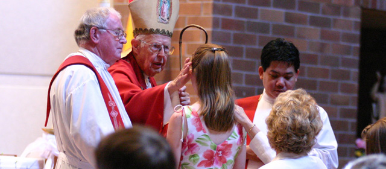

Where All Are Welcome
Call the Parish office : (916) 985-2065
Confirmation

- Confirmation (or Chrismation) is the sacrament of the Holy Spirit, the Holy Spirit whom Christ Jesus sent (John 7:37-39, 16:7). Jesus instructed his Apostles that they "will receive the power of the Holy Spirit" and called upon the Apostles to be his "witnesses to the ends of the earth" (Acts 1:8). At the Pentecost, the Apostles were filled with the Holy Spirit (Acts 2:1-4), and began to spread the Word of God. The Acts of the Apostles is often called the Gospel of the Holy Spirit. St. Ephrem of Syria, as well as St. Cyril of Jerusalem, wrote of the Sacraments of Chrism and Baptism in the mid-fourth century AD.
- The rite of Confirmation is anointing the forehead with chrism, together with the laying on of the minister's hands and the words, "Be sealed with the Gift of the Holy Spirit." The recipient receives the seven gifts of the Holy Spirit: wisdom, understanding, counsel, fortitude, knowledge, piety, and fear of the Lord (Isaiah 11:2-3). On occasion one may receive one or more of the charismatic gifts of the Spirit (1 Corinthians 12:7-11).
- The ecclesial effect and sacramental grace of the sacrament give the recipient the strength and character to witness for Jesus Christ. The East continues the tradition of the early Christian Church by administering the sacrament with Baptism. Confirmation in the West is administered by the Bishop to children from age 7 to 18, but generally to adolescents, for example, to a graduating class of grade school children. Key Scriptural sources for Confirmation are the following (See also Acts 1:4-5, 2:1-4, 2:38, 10:44-48):
| Sacrament | Biblical Basis | Central Words | Central Actions | Effects |
|---|---|---|---|---|
| Confirmation | John 20:22 - "(Jesus) breathed on them (the disciples) and said, 'Receive the Holy Spirit'"; Acts 8:17; 19:6 - believers receive the Spirit, esp. through laying on of the apostle's hands Acts 10:44-48 - the coming of the Spirit is closely associated with the Baptism of new believers |
"(Name), be sealed with the Gift of the Holy Spirit." |
Laying on of hands (the bishop lays his hands on the head of the confirmand). |
Being strengthened by the Holy Spirit; being "confirmed" in the fullness of the Christian faith. |
Confirmation at St. John the Baptist Catholic Church
8th Grade:
- Children receive Confirmation after completing at least two years (7th and 8th grades) of Religious Education (RE) instruction. Students are required to perform 10 hours of community service and attend a one-day retreat. Confirmation is scheduled by the Bishop’s Office for sometime in the spring.
High School:
- There are a few options available to high school students who have been baptized in the Roman Catholic faith, have been catechized, and have received First Eucharist. Please call our office to discuss which avenue is best suited to support your teen’s spiritual progress and instructional needs.
Requirements to be a Godparent or Sponsor for Confirmation:
- There should be a godparent for the person to be baptized as far as this is possible. In adult baptism, the godparent assists in Christian initiation. In infant baptism, the godparent, with the parents, presents the child for baptism and helps the baptized to lead the Christian life in harmony with baptism and to fulfill faithfully the obligations inherent to it (can. 872). There may be one godfather, one godmother, or one of each (can. 873).
-
If there are two godparents, one must be male and the other female. A single godparent may be of either sex. It may happen that parents want two person of the same sex to be godparents and they have good reasons for this. A possible solution to such a case is to register one as the official godparent, while the other would assume only the cultural and familial customs connected with the role.
- Qualifications of godparents - The qualifications of godparents at baptism given here also apply to the godparent (sponsor) for confirmation: The godparents are to be chosen by the adult who is to be baptized or, at infant baptism, by the parents or the person who takes their place. When this is not possible, the pastor or other minister should choose the godparent or godparents.
- The godparents must have the qualifications for and intention of carrying out this duty.
- The godparents’ duty is not only to be present for the celebration of the sacrament, but it is a lifelong responsibility to help the baptized lead a Christian life in harmony with baptism, and to fulfill faithfully the obligations connected with it (can. 872).
- They are to be a least sixteen years of age, unless the diocesan bishop has established another age or unless, in an exceptional case, it seem to the pastor or minister that there is just cause to admit a younger person.
- They must be Catholics who are already confirmed and have received the holy Eucharist.
- They should be leading a life of faith in harmony with the duty they are undertaking.
- They may not be under a lawfully imposed or declared canonical penalty.
- They may not be the father or mother of the one to be baptized (cc. 874 , 1, 893).
- If married, they must be married in the church or have the proper ecclesiastical dispensation (cc. 874 1, 894).
- We do not recommend 2 non-Catholic witnesses.
- A baptized Catholic cannot be considered a Christian witness if he or she is not confirmed.